여행 안전 안내
북부 접경 지역의 상황과 수도원 방문·도로 통행 여건은 바뀔 수 있습니다. 이 페이지는 방문을 권하기보다 역사·문화 정보를 전합니다. 방문 전에는 공식 여행경보와 최신 안전 공지를 꼭 확인하세요.
관광 명소 15곳
사진은 Wikimedia Commons에 공개된 실제 촬영본이며, 저작자와 라이선스를 각 사진 아래에 적었습니다. 촬영한 날씨·시기·구도에 따라 실제 모습은 다를 수 있습니다.
-
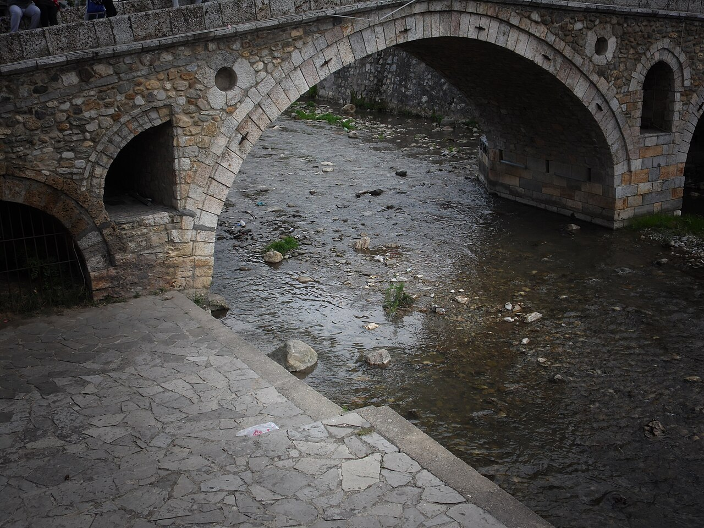
사진: Ergonc · CC BY-SA 4.0 · Wikimedia Commons 프리즈렌 구시가지·석교Prizren / Ura e Gurit
건축 문화와 종교의 공존을 함께 볼 수 있다.
자세히 보기
-
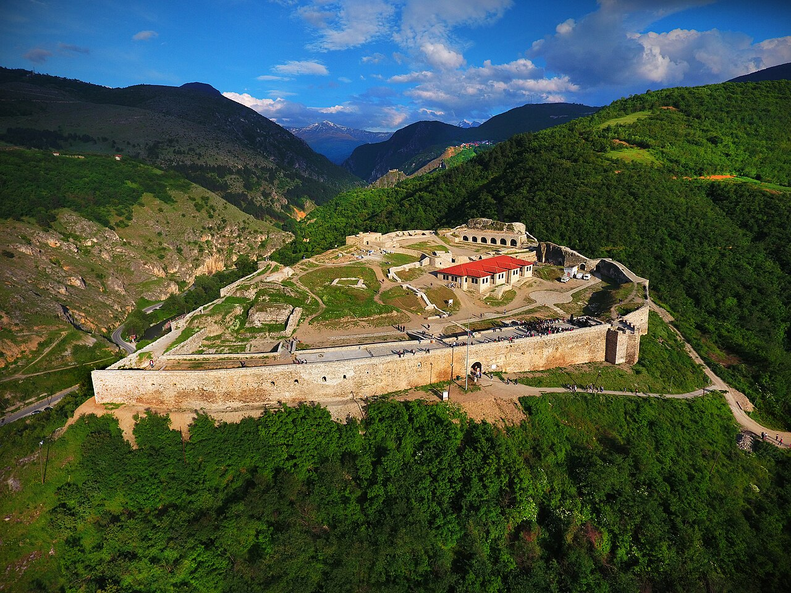
사진: Agonsta24 · CC BY-SA 4.0 · Wikimedia Commons 프리즈렌 요새Kalaja e Prizrenit
구시가지 위 언덕의 성채로 강변·붉은 지붕·샤르산맥을 한눈에 볼 수 있다. 오르막·일몰 시간 이동에 주의한다.
자세히 보기
-
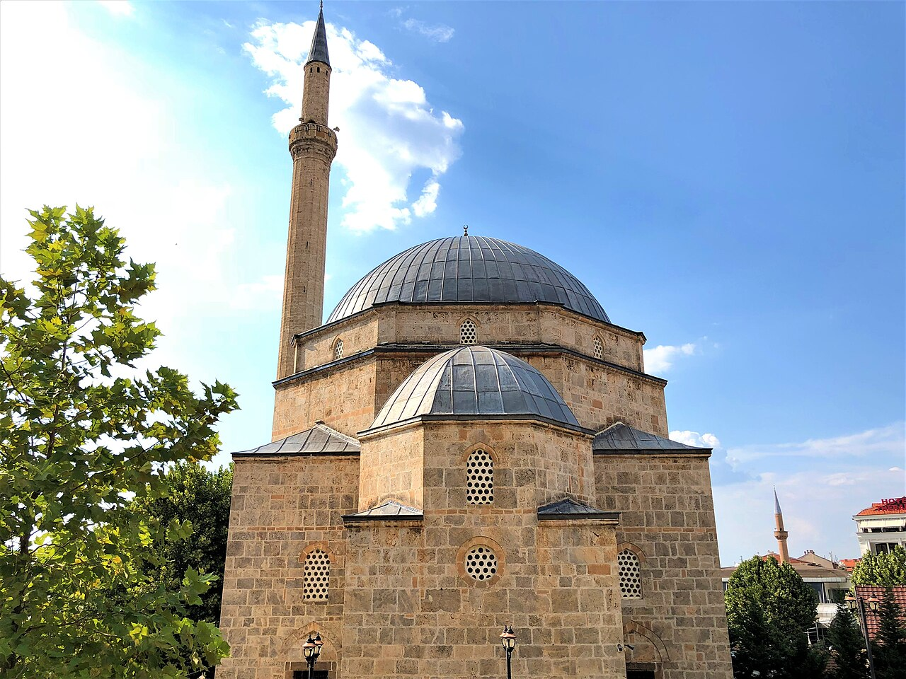
사진: OrgenKelmendi · CC BY-SA 4.0 · Wikimedia Commons 시난 파샤 모스크Xhamia e Sinan Pashës
17세기 오스만 시대 모스크. 첨탑과 돔, 내부 장식이 볼거리이며, 예배 시간에는 방문 예절을 지켜야 한다.
자세히 보기
-
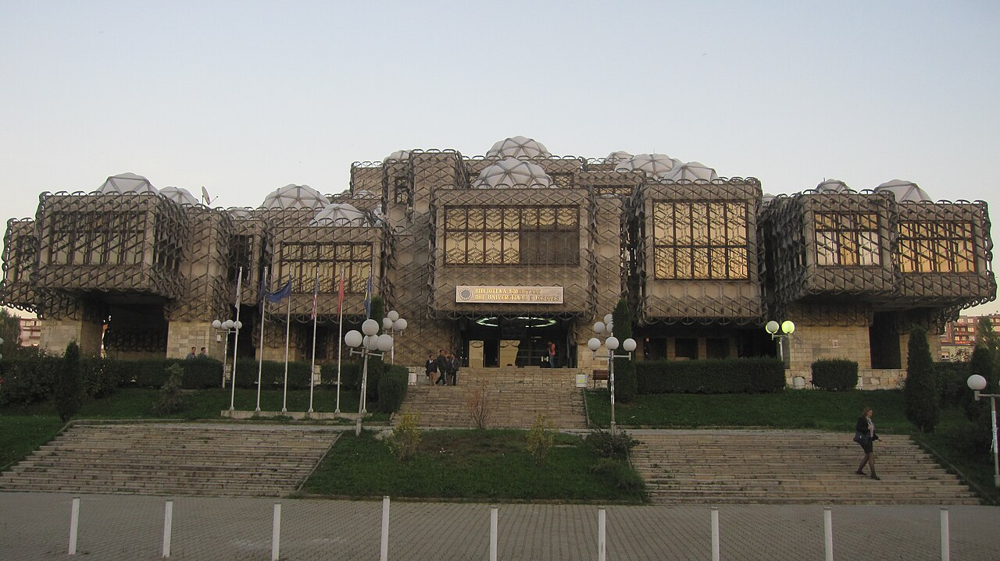
사진: Violetamyftari · CC BY-SA 4.0 · Wikimedia Commons 코소보 국립도서관Biblioteka Kombëtare e Kosovës
작은 돔과 금속 격자 외관으로 알려진 독특한 현대 건축물. 다른 도시의 건축과 뚜렷이 구별되는 외관이다.
자세히 보기
-
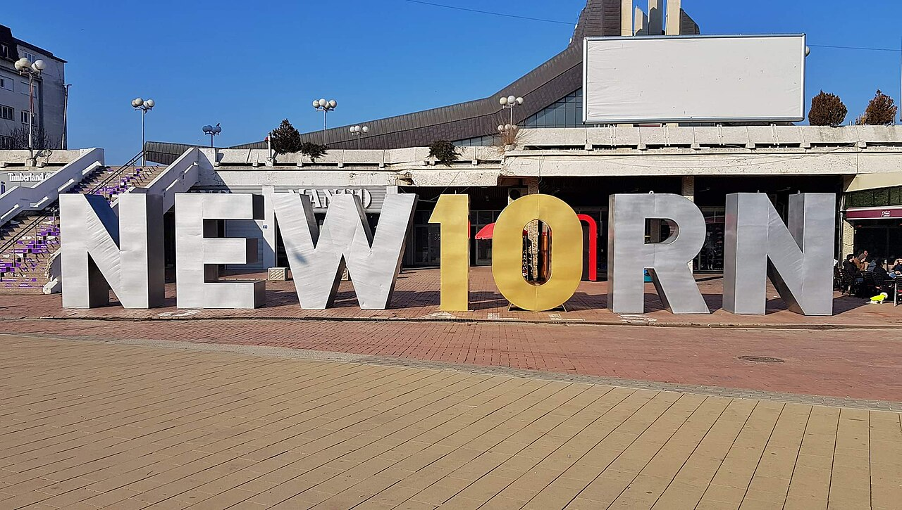
사진: Newborn Monument · CC0 · Wikimedia Commons NEWBORN 기념물NEWBORN Monument
2008년 독립 선언 시점에 등장한 공공 설치미술.
자세히 보기
-
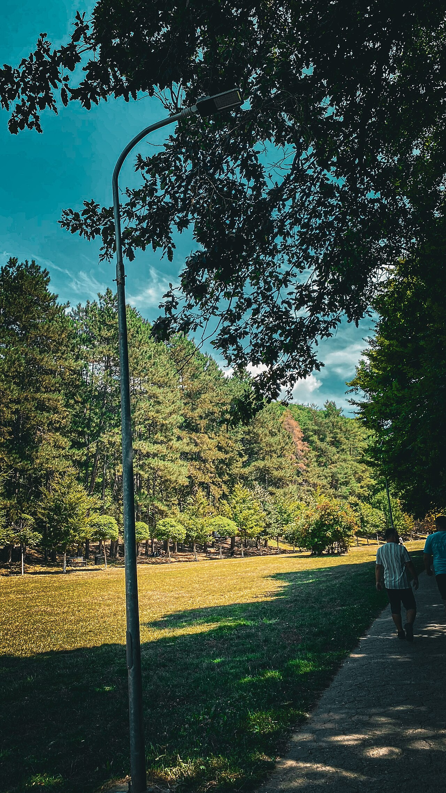
사진: Berishasinan · CC BY-SA 4.0 · Wikimedia Commons 게르미아 공원Parku i Gërmisë
도시 동쪽의 숲길·피크닉 공간으로 주거생활과 녹지의 관계를 보여준다.
자세히 보기
-
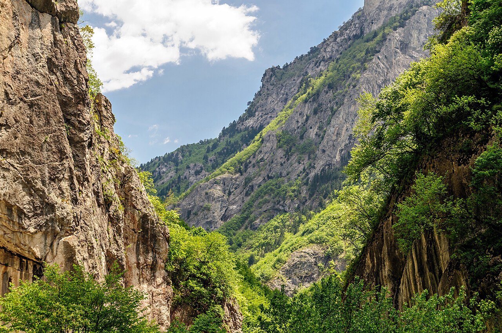
사진: Otaulant · CC BY-SA 3.0 · Wikimedia Commons 루고바 협곡Gryka e Rugovës
커다란 암벽 사이로 계곡과 도로가 이어지는 서부의 상징적 산악경관. 전망대에서 협곡 단면을 포착하면 특징이 뚜렷하다.
자세히 보기
-
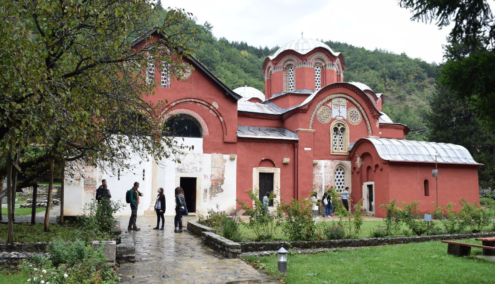
사진: Luli.hakaj · CC BY-SA 4.0 · Wikimedia Commons 페치 총대주교청 수도원Patriarkana e Pejës
세르비아 정교회 역사에 중요한 중세 성당군·벽화. UNESCO 세계유산 구성 요소로 등록되어 있으며 방문 규정을 확인한다.
자세히 보기
-
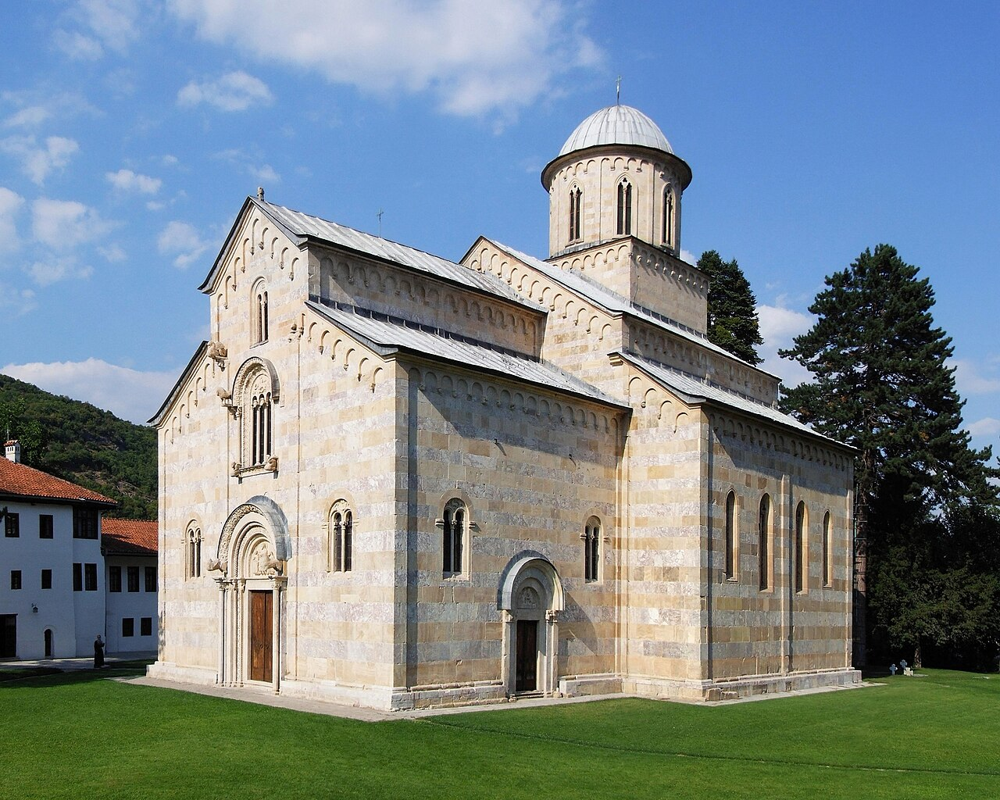
사진: Pudelek (Marcin Szala) · CC BY-SA 3.0 · Wikimedia Commons 비소키 데차니 수도원Manastiri Visoki Dečani
14세기 수도원과 프레스코로 잘 알려진 UNESCO 세계유산 구성 요소. 수도원의 위치와 유산 명칭에는 정치적으로 민감한 맥락이 있다.
자세히 보기
-
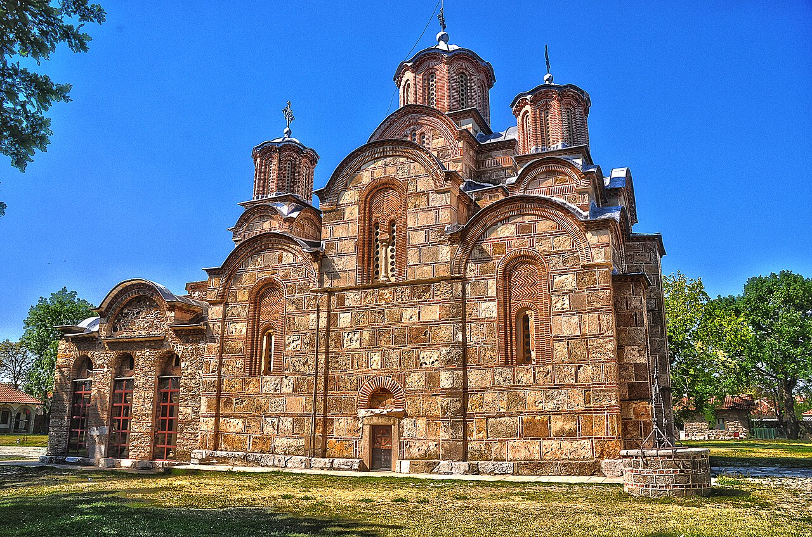
사진: Sasa Micic · CC BY-SA 3.0 · Wikimedia Commons 그라차니차 수도원Manastiri Gračanica
비잔틴 건축 특징과 벽화가 돋보이는 정교회 수도원으로 UNESCO 위험유산의 일부다.
자세히 보기
-
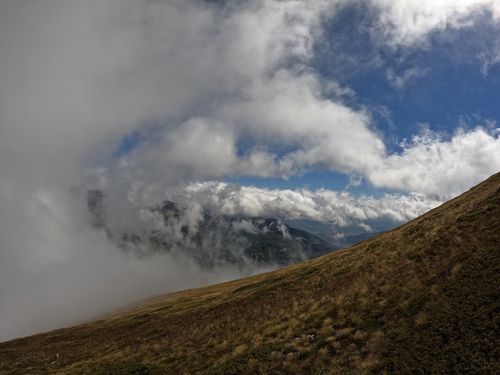
사진: Mensur Gashi · CC BY-SA 4.0 · Wikimedia Commons 샤르산맥·브레조비차Bjeshkët e Sharrit / Brezovica
국경을 넘나드는 높은 산과 겨울 설경·여름 초원이 특징이다. 자연보호·날씨·스키장 운영을 확인한다.
자세히 보기
-
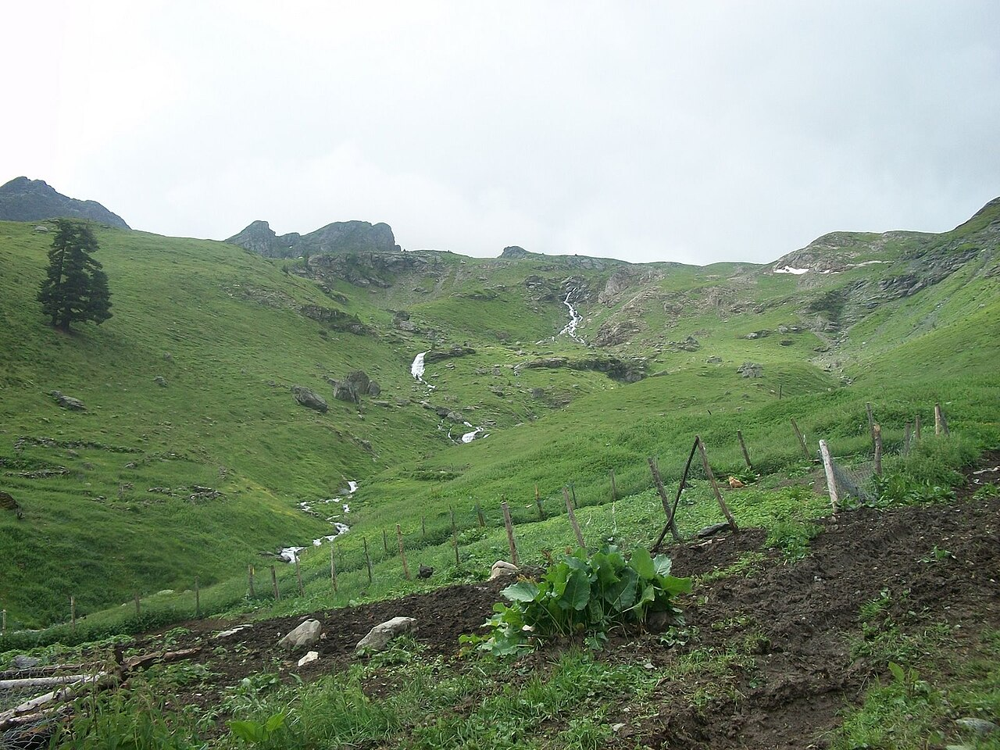
사진: Heroid Shehu · CC BY-SA 3.0 · Wikimedia Commons 제라비차 산·빙하호Gjeravica
높은 산과 빙하호 풍경으로 유명한 등산 대상지. 겨울과 안개, 비포장 탐방로에는 위험이 따른다.
자세히 보기
-
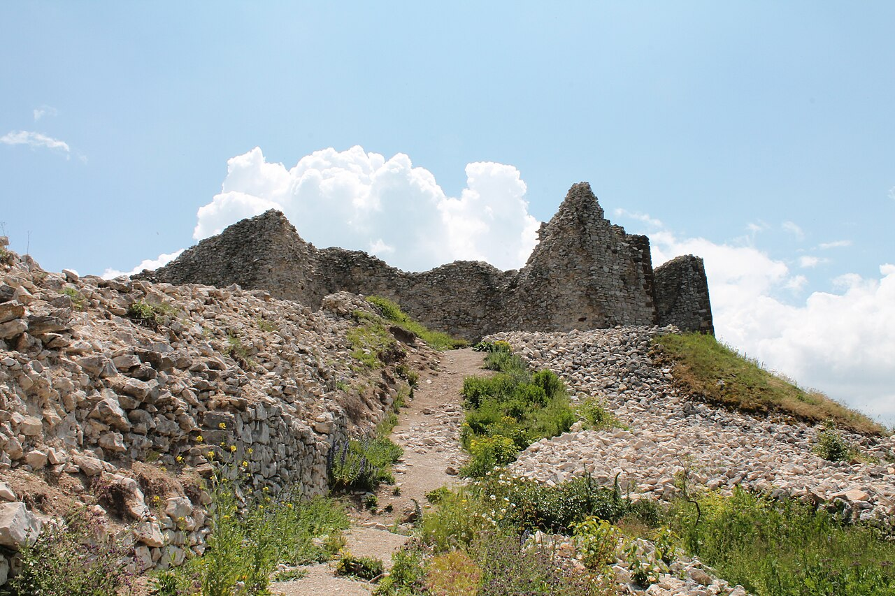
사진: Shpat Buzoku · CC BY-SA 3.0 · Wikimedia Commons 노보브르도 중세 요새Kalaja e Novobërdës
중세 광업·상업 중심지로 알려진 산정 요새. 바위 언덕과 성벽이 인상적이다.
자세히 보기
-
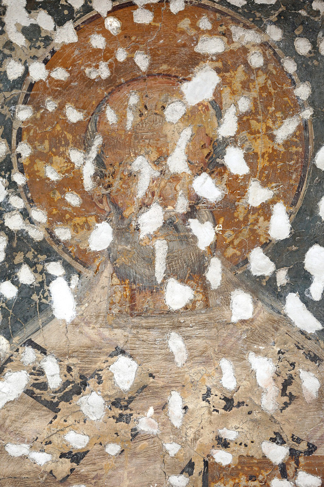
사진: BLAGO Fund, Inc. · CC BY 4.0 · Wikimedia Commons 레비샤 성모교회Bogorodica Ljeviška
중세 정교회 성당이자 UNESCO 등재 중세 기념물군의 구성 요소.
자세히 보기
-
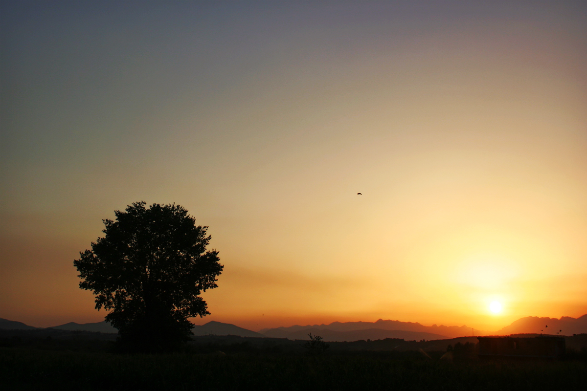
사진: Shkumbins · CC BY-SA 3.0 · Wikimedia Commons 라호베츠 포도밭Rahovec / Orahovac
남서부의 포도재배·와인산지로 계절별 포도밭과 생산시설을 함께 보여줄 수 있다.
자세히 보기
여행 전에 확인하세요
운영시간·입장료·예약·개방 여부는 계절과 상황에 따라 바뀝니다. 방문 전에 각 명소의 공식 안내에서 다시 확인하세요.